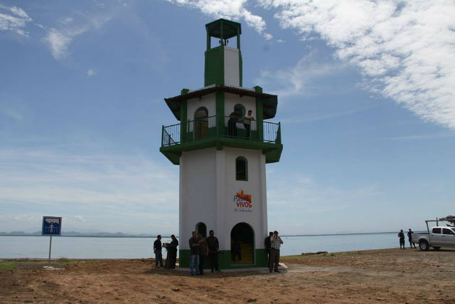

La Unión es un departamento de la zona oriental de El Salvador. Es el más oriental de los departamentos salvadoreños y el que posee en su jurisdicción las aguas e islas cuzcatlecas del Golfo de Fonseca, bahía compartida con Honduras y Nicaragua. En este departamento y golfo se encuentra el único municipio insular de El Salvador, Meanguera del Golfo. Su cabecera departamental es la ciudad y puerto de La Unión.
A finales del siglo XVIII el "Puerto San Carlos" recibió este nombre en honor al rey Carlos III de España, quien gobernó de 1759 a 1788. En 1807, el puerto de San Carlos figura incluido como pueblo del partido de San Alejo. Ingresó el 12 de junio de 1824, en el Departamento de San Miguel. El 13 de julio de 1824, el puerto de San Carlos fue habilitado por la Asamblea Nacional Constituyente de las Provincias Unidas del Centro de América como "Puerto Mayor", con el nombre de Puerto de La Unión Centroamericana. El 28 de febrero de 1865 se otorgó al pueblo de San Carlos de La Unión el título de Ciudad. El 22 de junio de 1865, por D.E en la administración de Francisco Dueñas, se erige el departamento de La Unión.
Entre los principales puntos de interés turístico sobresalen las playas del Tamarindo, Playas Negras y Playitas, el volcán de Conchagua, que en lengua lenca recibe el nombre de Amapala (Cerro de las culebras), la localidad de Lislique, un notable centro artesanal y la ciudad de La Unión, la cabecera del departamento y un importante puerto.
